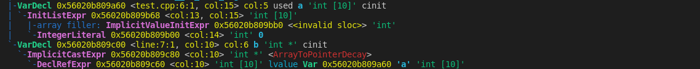
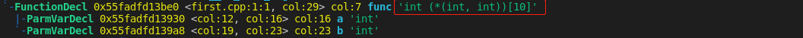
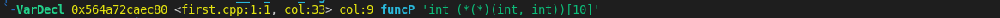

C++ 中数组指针和函数指针
数组的类型
在往常的编程中，我们都知道数组的名字就代表数组第一个元素的地址，这总是让我们对数组的类型产生误解。比如对于这条指令 int a[10] = {0}; ，因为当引用数组名 a 的时候往往相当于引用数组第一个元素 a[0] 的地址，所以我们可能会误认为数组 a 的类型是 int *，然而数组名 a 代表的却是整个数组，他的类型并不是简单的 int *，那数组 a 的类型到底是什么呢？我们都知道一个数组的两个特点是存储元素的类型和数组的大小，那么很容易的想到数组 a 的类型便是 int [10] 啦。对于如下两句代码，我们可以用 clang 生成 AST 观察其类型的特征：
1 | int a[10] = {0}; |

可以看到在第一个 VarDecl 节点，明确的指出了数组 a 是 int [10] 的类型，而在第二个 VarDecl 节点，为了用 a 初始化变量 b ，首先是通过隐式转换，将 int [10] 类型转换为 int * 后再赋值给变量 b ，更进一步说明了数组 a 的类型就是 int [10]。由此我们可以总结出任意数组的类型并不简单的就是其元素指针的类型，而是形式于 element-type [array-size] 。
数组指针怎么写
既然数组是有其独特的类型的话，那么我们也可以声明且定义一个指向某种数组的指针。如下：
1 | int arr[10] = {0}; // 定义一个包含10个int型元素的数组 |
声明返回一个数组指针的函数
因为函数不能用来返回一个数组，所以我们可以返回一个数组指针。最直接的方式是直接声明一个返回数组指针的函数，如下 func 函数返回一个 int (*) [10] 型数组指针:
1 | int (*func(int a, int b))[10]; |
我们可以通过从内向外的方式来理解这个声明，
func(int a, int b)代表调用 func 函数时要两个 int 类型的实参；(*func(int a, int b))代表我们可以对函数调用的结果解引用；(*func(int a, int b))[10]代表解引用 func 的调用将得到一个大小是 10 的数组；int (*func(int a, int b))[10]代表数组中的元素是 int 类型。所以 func 函数的返回值类型是 int(*)[10] 。
也可以通过 typedef 或 using 来声明类型别名，使得函数返回值看起来更加清楚，如下 func 函数返回一个 int (*) [10] 型数组指针：
1 | typedef int arrT[10]; //arrT是一个类型别名，表示的类型是含有10个整数的数组 |
在 C++11 中，可以使用尾置返回类型，使用该特性对于上述 func 函数等价声明如下：
1 | auto func(int a, int b) -> int(*)[10]; |
函数的类型
声明一个数组的时候，会用一个变量来保存，理解数组有类型似乎很简单，但是函数的类型应该理解呢？对于一个函数，我们可以把他的参数看成输入，返回值看成输出，这样函数与外界交互的方式就由其参数和返回值决定，所以函数的类型也由其接收参数的类型和返回值的类型来决定。比如，对于上面直接的 func 函数的声明，可以输出语法树结构来看其函数的类型：
1 | int (*func(int a, int b))[10]; |

可以看到，func 函数的类型是 int (*(int, int))[10]，最内层括号代表其接受的参数类型是两个 int ，括号外层代表其返回值类型是 *int ()[10]**。
函数指针怎么写
既然函数也是有类型的，那么自然可以定义函数指针，函数指针也是指针，其指向的是某个具体函数或者为空。如以下例子：
1 | //funcP前面有一个*，所以可以解引用，所以funcP是一个指针；右侧是形参列表，表示funcP指向的是函数；而再观察其余部分，可知所指向函数的返回类型是int(*)[10] |
clang 输出语法树：

很明显对于 funcP 是一个变量声明，而不是函数声明，funcP 是一个函数指针，其指向的函数类型为 int (*(int, int))[10]，所以可以初始化 funcP 指向上述所说的 func 函数。
1 | int (*func(int a, int b))[10]; |
参考资料：《C++Prime》